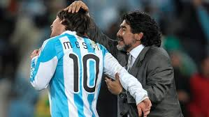
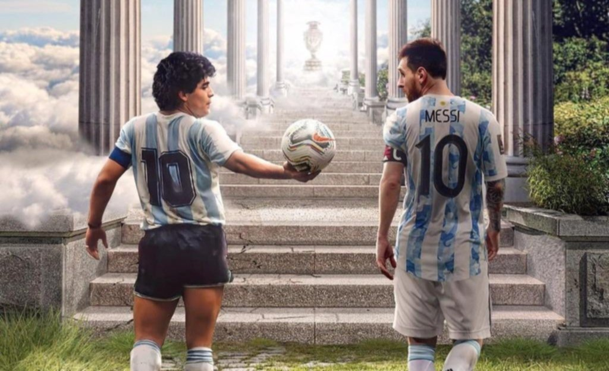

Introducción
Lionel Messi y Diego Maradona son considerados dos de los mejores futbolistas de la historia. Ambos representan el orgullo del fútbol argentino y han marcado generaciones con su talento. Aunque pertenecen a épocas diferentes, su relación ha sido de admiración mutua y conexión especial.
Maradona como Entrenador de Messi
Diego Maradona dirigió a Lionel Messi durante el Mundial de Sudáfrica 2010, en el cual Argentina alcanzó los cuartos de final. Maradona siempre destacó la importancia de Messi en el equipo, calificándolo como un jugador único y excepcional.
Comparaciones
La prensa y los aficionados han comparado constantemente a Messi con Maradona, especialmente después de goles similares que ambos anotaron. Ejemplo de ello es el famoso "Gol del Siglo" de Maradona contra Inglaterra en 1986, y un gol de Messi contra el Getafe en 2007.
La Admiración de Messi
Messi ha expresado en varias ocasiones su admiración por Maradona, destacándolo como su ídolo de la infancia. Tras el fallecimiento de Maradona en 2020, Messi le dedicó un emotivo mensaje y homenajeó su legado usando una camiseta del Newell’s Old Boys, equipo en el que ambos jugaron.
Legado Compartido
Ambos han dejado una marca imborrable en el fútbol mundial. Mientras Maradona llevó a Argentina a ganar la Copa Mundial en 1986, Messi repitió la hazaña en 2022, consolidando el legado argentino en la élite del fútbol.